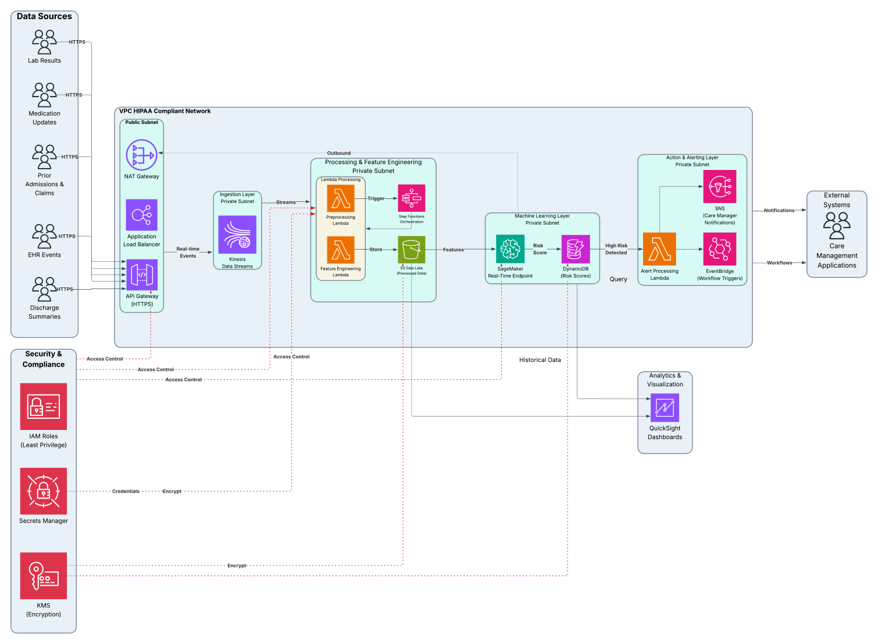

This project focused on developing a cloud-based solution to analyze patient data and reduce hospital readmissions. Using AWS services, we designed a scalable system to support data storage, processing, and predictive analytics.
We explored patient-level data to identify patterns associated with readmission risk and applied machine learning techniques to support early intervention strategies.
The solution emphasized business impact by estimating cost savings from reduced Medicare penalties and improved patient outcomes.
Ethical considerations were also evaluated, particularly around data privacy and fairness in healthcare decision-making.
High Readmission Rates: 13-14% of patients are readmitted within 30 days. Most of these readmissions are considered preventable.
Financial Penalties: Significant financial repercussions under the CMS Hospital Readmissions Reduction Program (HRRP). Billions of dollars are spent annually on preventable readmissions.
Real-time AWS Platform: Leveraging cloud infrastructure for immediate data processing.
Predictive Analytics & ML: Employing advanced algorithms to identify high-risk patients.
Early Intervention: Enabling proactive measures to reduce readmissions and associated costs.
